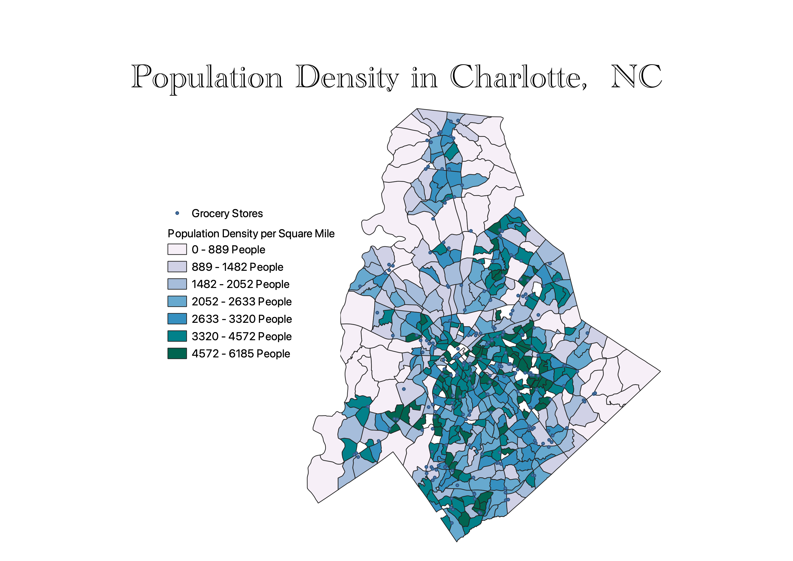
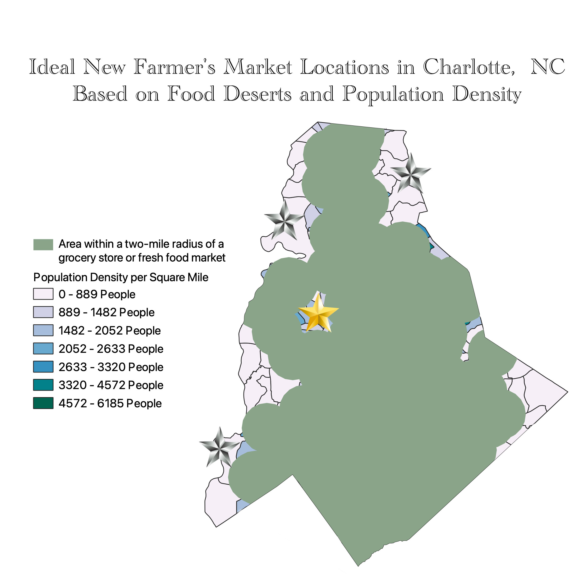

Homework 8: Geoprocessing Analysis
Delaney Black
Where should new Farmer’s Markets be instated, based on population density and the locations of food deserts in Charlotte, North Carolina?
The population density of Charlotte, NC was mapped in a choropleth with census data retrieved from the Charlotte Open Data Portal. A deeper teal indicates a higher population density, measured by the number of people per square mile. As is expected, the inner city has the highest population density while that of the suburbs and outer layer is fairly low.
Every grocery store and fresh food market in Charlotte was then added as a point on this map, with data also retrieved from the Charlotte Open Data Portal. A two-mile buffer was applied to each point, representing the area with the greatest ease of access to that store. This buffered layer was then dissolved, representing the total area within a two-mile radius of a grocery store.
Based on the locations in Charlotte that were not within the two-mile access zone of a grocery store and by population density, four potential locations for new stores were found. Of these, the ideal location for a new Farmer’s market is noted in gold, while the other plausible locations are marked in silver.
Population Density and the Locations of Current Grocery Stores & Farmer's Markets

Food Deserts and Suggested Locations for New Farmer's Markets

Data used for this project
Population Census Data
Retrieved from https://data.charlottenc.gov/datasets/census-population-block-groups/explore?location=35.261469%2C-80.809935%2C10.14
Grocery Stores
Retrieved from https://opencharlotte-charlotte.opendata.arcgis.com/datasets/c13e9b1b97d645029adc0c3d0ea7f1a3_7/explore?location=35.263750%2C-80.863550%2C10.28&showTable=true